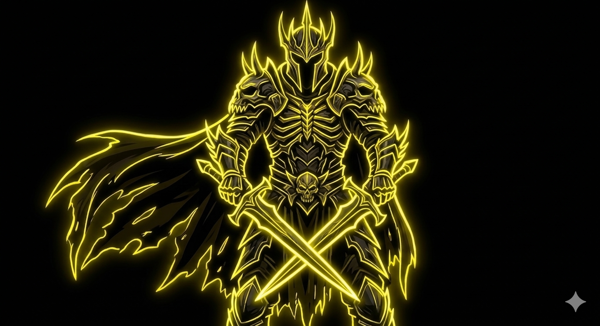

Entender cómo funciona el sistema de runas, las resistencias y el scaling de daño te da ventaja real. No necesitás un build copiado si entendés los fundamentos.
No te persigue ni te favorece. Te da opciones y vos decidís qué hacer con ellas. El jugador adaptable siempre tiene más caminos que el que fuerza.
Lo que hoy no te sirve, es el poder del mañana. Guardá todo. Otro personaje, otro momento, otra build — todo tiene su momento.
Si el loot te empuja hacia otra dirección, escuchalo. Pivotar no es rendirse — es inteligencia táctica. El RNG muchas veces muestra un camino mejor.
"Don't be afraid if you don't see many players around. The game may feel empty at first — but its true nature lives in the endgame. That's where everyone is."
No es tu main — es tu escuela. Cada error, cada pivot de build, cada ítem guardado en el baúl es una lección. La satisfacción de llegar al endgame es real.
Whirlwind → Toxic Flame → Icy Arrow. Cada build fue una respuesta a lo que el juego ofrecía. Adaptarse no es rendirse — es jugar bien.
Lo que hoy no usás, es el poder de otro personaje mañana. El baúl no es desorden — es planificación a largo plazo.
Explorar cada rincón, completar cada mapa al 100% y cumplir misiones secundarias no es tiempo perdido — el juego lo premia con logros, recursos y contenido exclusivo del Epílogo.
Romper barriles, cajas y objetos del escenario parece insignificante — pero cuenta para logros reales. En Undecember cada acción tiene peso. Nunca ignorés el entorno.
El juego se adapta solo al progreso. Las Jewells aparecen en el Act 6, las cartas del Caos recién al final del Act 13. No hay necesidad de crear una mula desde el inicio — aprendé primero qué guardar, qué vender y qué romper.
En mi experiencia: no. Pero la organización sí importa. Saber gestionar el espacio del banco, decidir qué pasarle a otros personajes y qué descartar vale más que cualquier item comprado.
El 75% que tenías en el Act 3 puede no alcanzar en el Act 7. A medida que avanzás de episodio, los enemigos escalan y las resistencias se "caen" relativamente. Revisalas cada vez que cambiás de episodio — no son "set and forget".
No todos los items son una mejora incremental. Algunos cambian el rumbo completo — un antes y un después. No siempre los reconocés al equiparlos, pero lo notás cuando el juego empieza a fluir diferente. Guardá todo hasta estar seguro.
Hay bosses que actúan como un checkpoint natural — sin spoilear cuáles. Si no podés con uno, el juego no te está castigando: te está mostrando algo sobre tu build. No es necesariamente que estés mal, sino que hay algo por ajustar antes de seguir.
A veces el juego te obliga a perder algo — puntos del Zodiaco, stats, runas o equipo — para desbloquear un progreso mayor. No es un castigo, es el sistema adaptándose. Aceptar ese cambio forzado es lo que separa al jugador que avanza del que se queda trabado.
Buscaba críticos amarillos entre los blancos. Muy satisfactorio, pero las resistencias me frenaron en el Act 6. Primera lección: el juego te avisa cuando un build llegó a su techo.
Transición al daño fijo (Max-Min DMG). Estabilidad pura para superar el pico de dificultad. Cada cambio de build significó guardar items distintos — el baúl empezó a crecer con propósito.
La meta: AMARILLOS ENORMES. Velocidad y críticos masivos. Recompensa a la organización.
El juego permite resetear el Zodiaco Gratis hasta antes de matar el jefe final del Act 10. Esto no es solo una ventaja — es una invitación a probar builds diferentes sin miedo. Experimentar antes del Act 10 no es tiempo perdido — es inversión en el inventario.
Una vez desbloqueado (Act 1 o 2), prestá atención a las runas que elegís. Evitá repetirlas al principio — concentrate en conseguir runas nuevas para sumar puntos y obtener mejoras permanentes. ¡Cada punto suma! Lo mismo aplica para los items Únicos: guardalos para el buff pasivo.
Empezá a craftear temprano. No dejes la mesa de alquimia quieta — subir el nivel de Maestría es la única forma de desbloquear Pociones Únicas y crafteo avanzado más adelante. La eficiencia es la clave.
Entre el Mid y Late Game, mientras el crafteo avanzado todavía no es del todo viable, gastar el oro ahorrado en Objetos Misteriosos es una gran opción. Es la mejor forma de buscar bases de alto nivel o equipo decente.
Agregar amigos, unirse a una guild, completar tareas diarias — cada acción suma puntos de progreso invisible. Los buffs diarios y recompensas de guild son victorias pasivas que muchos ignoran.
Si venís de juegos como PoE, ya sabés cómo funciona: el personaje de Temporada termina en Estándar al final del ciclo. Pero mientras dura, tiene mayor drop de oro, más esencias de alquimia y mejores chances de Únicos. Mi recomendación personal: arrancá en Temporada.
En Hardcore, si tu personaje muere demasiadas veces sin ser cuidadoso, las consecuencias son permanentes. Normal te da margen para aprender sin ese peso. Para un jugador nuevo: empezá en Normal, aprendé el juego, y cuando te sientas seguro considerá el desafío Hardcore.
This web-app has part of my thoughts, moving into a global vision. I'm not telling how to play; instead of it, I'm telling my story or my way through the game.
| Color | Atributo | Enfoque |
|---|---|---|
| 🔴 Rojo | Fuerza (STR) | Supervivencia · Físico |
| 🟢 Verde | Agilidad (AGI) | Velocidad · Destreza |
| 🔵 Azul | Inteligencia (INT) | Magia · Utilidad |
| ⚪ Blanco | Universal | Enlace Libre |